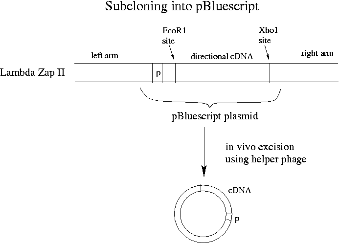

Day 11 Morning Lecture Notes
Steve Williams, Smith College
June 16, 2004

Last night we unidirectionally ligated our cDNA into Lambda Zap II using EcoR1 on one side and Xho1 on the other. The left arm of Lambda Zap II has a lac operon promoter that will allow proper transcription. (A eukaryotic promoter would mean nothing to E. coli.) Excision of the pBluescript plasmid from Lambda Zap II is performed using a helper phage included in a kit from Stratagene.
7x coverage for a cDNA library should give all mRNAs in a given tissue. The cDNA library can then be screened by hybridization or PCR. For screening with a probe from another species, hybridization is preferable as it can be less stringent. Hybridization probes themselves can be luminescent although a chemiluminescent reaction is 10x more sensitive. A cDNA library (unlike a genomic library) can also be screened with an antibody to the protein that the insert expresses. The lac promoter in the plasmid can be turned on with lactose or IPTG to make sure that the gene is expressed.
Adding a cDNA onto lac Zalpha is an example of "gene fusion." The product is an example of "protein fusion."
cDNA clones offer differ in length because:
With luck, all that will vary between cDNA clones will be the length of the untranslated regions at either end of the mRNA. There are protein sequencing machines that clip off one amino acid, run the protein through a chromatography column, clip off another amino acid, run through a column again, etc. Proteins are about 300 amino acids long on average with genes typically about 1000 bp long.
Up Previous Next